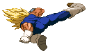
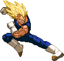
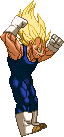
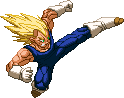

Hyper Dimension Kick
Makes Vegeta perform a jumping spin kick.
He's invulnerable on the lower half of his body during the start-up. But it's not very useful for combos. It seems to be quite effective against those Saibamen.


Double Axe Kick
This works as a regular standing Strong Kick and thus can chain into specials and supers. It hits twice; once when Vegeta's leg goes up and another time when he axe kicks it back down.


Uppercut
Main tool for launching enemies into the air after which you can pursue them (by pressing Up) for an aircombo.


Smash Kick Combo
Vegeta can follow up his crouching Strong Kick with a knock-away kick.


Extended Jumping Light Kick
You're able to hold down the knee kick so it remains able to hit an opponent
all the way until Vegeta lands, based off how jumping Light attacks worked in Street Fighter 2.


Jumping Medium Punch chain
Air combo extender.
Big Smash
Main tool for smashing opponents down to the ground during an aircombo. If an aerial opponent is hit by this move,
they'll fly to the ground and then bounce up upon impact allowing for a juggle oppertunity.

Piston Kick
(Another) main tool for smashing opponents down to the ground during an aircombo. If an aerial opponent is hit by this move,
they'll fly to the ground and then bounce up upon impact allowing for a juggle oppertunity.

Stomp Kick
Opponents will get smashed down hard when hit by the Stomp Kick, while Vegeta dismounts with a little boost back up.
There is a short delay before the Stomp Kick once inputted, freezing Vegeta in place in air, which can be useful for evading certain things. Combo ender. Or is it? Try using the aerial Photon Bomb during the dismount.

Backdash Elbow
After performing the backflip backdash, Vegeta dashes forward with the elbow attack
which can be chained into standing/crouching medium attacks, making it a pretty sweet combo starter. Can be chained into from his Focus Attack; as soon as the Focus hits,
input the b,b+SP and Vegeta performs the move, albeit a slightly alternate version; he does a small hop instead of the backflip, to make it come out fast enough to combo.
Dashing Slide Kick
A dashing low sweep attack that trips the opponent's legs and sends them a bit into the air, creating a nice juggling oppertunity.
Can be cancelled into from his Focus Attack as with nearly all 'running' attacks.
Sliding Kick Combo
Majin Vegeta can turn his Sliding Kick into the Sliding Kick Combo,
losely based of the special move by the same name from Hyper Dimension. You'll need to keep a short delay before inputting the buttons for the follow-up kicks
as otherwise you're likely to whiff with them. Time them with the opponent falling back down.


Bakuhatsuha
Majin Vegeta ditches his regular Ki Blasts in favor of a toned down version of his Bakuhatsuha super move he used as Normal Vegeta.
The explosion needs to be blocked low, hits Off The Ground and knocks them slightly up.
While it may seem like he is less likely to hold his own in non-Super fireball battles,
these explosions detonate high enough to collide with and thus cancel incoming enemy 1-hit projectiles.
The strength of the punch button used to activate the move with determines the distance at which the explosion is set off.
Light is near, Medium a bit farther and Strong pops up across half the screen.
The EX version is one of the coolest moves in his arsenal, creating three explosions in a row (basically the LP, MP and SP versions in rapid succession).

Royal Fist
The Royal Fist comes out as a gut punch, very close range with a Light Punch input and covering about 2 character-lengths with a Strong Punch input.
When it connects he'll throw out an overhead punch and then a final straight punch that knocks the opponent away.
Can be super-cancelled into Royal Edict anytime before the third punch connects.
The EX version is the Bullseye Buster. The last punch of this has an extremely short recovery time allowing you to continue with a combo attack.

Suprise Elbow
Your go-to pressure move, an elusive dashing elbow attack. Strength and speed depend on the button pressed;
The Light version goes forward instantly, but it doesn't knock the opponent out, leaving you vulnerable. You can however Supercancel this version (and this version alone) into the Photon Bomb, Machine Gun Tantrum, Royal Edict or Big Bang Attack once it connects or, uniquely, repeat the elbow itself up to 2 times if it's blocked. The Medium version has Vegeta dashing backwards, then forward again with his elbow sticking out, knocking the opponent down upon impact.
The Strong version also has Vegeta dashing back and then forward (and farther then the Medium version) but it knocks the opponent away harder, resulting in a wall-bounce if they're close enough to it. You can cancel both the Medium and Strong versions by pressing any two Kick buttons simultaneously during the backdash part (though you have to be real swift with the input); useful as a quick alternate backdash retreat.
The EX version has Vegeta dashing forward instantly like the LP version and if he connects with this (whether it actually hits or is blocked) he quickly switches sides with the opponent and then elbows them in the back, sending them away hard, wall-bouncing if they're close enough to it. However if the first attack is blocked by the opponent, the second one is also very easily blocked.
The Light version goes forward instantly, but it doesn't knock the opponent out, leaving you vulnerable. You can however Supercancel this version (and this version alone) into the Photon Bomb, Machine Gun Tantrum, Royal Edict or Big Bang Attack once it connects or, uniquely, repeat the elbow itself up to 2 times if it's blocked. The Medium version has Vegeta dashing backwards, then forward again with his elbow sticking out, knocking the opponent down upon impact.
The Strong version also has Vegeta dashing back and then forward (and farther then the Medium version) but it knocks the opponent away harder, resulting in a wall-bounce if they're close enough to it. You can cancel both the Medium and Strong versions by pressing any two Kick buttons simultaneously during the backdash part (though you have to be real swift with the input); useful as a quick alternate backdash retreat.
The EX version has Vegeta dashing forward instantly like the LP version and if he connects with this (whether it actually hits or is blocked) he quickly switches sides with the opponent and then elbows them in the back, sending them away hard, wall-bouncing if they're close enough to it. However if the first attack is blocked by the opponent, the second one is also very easily blocked.


Double Slash Kick
Roughly based of a special move by the same name he had in Super Butoden 2 and 3.
Vegeta dashes diagonally up into the air with a flying kick, knocking the enemy off their feet if he hits.
When he reaches the peak of his flying kick, he automatically performs a secondary kick.
The Light Kick's secondary kick is what you're familiar with; he turns around and dive-kicks back to his starting position. The Medium Kick's is now a variant of his Stomp Kick (it doesn't have the recoil that the aerial d+SK version has). The Strong Kick's is the same dive kick as in the Light Kick version but in a continueing direction (he doesn't turn back around). The EX version has Vegeta go up and down twice. He does so on the Light Kick version's flying arc by default but you can switch directions by pressing left or right.
The Light Kick's secondary kick is what you're familiar with; he turns around and dive-kicks back to his starting position. The Medium Kick's is now a variant of his Stomp Kick (it doesn't have the recoil that the aerial d+SK version has). The Strong Kick's is the same dive kick as in the Light Kick version but in a continueing direction (he doesn't turn back around). The EX version has Vegeta go up and down twice. He does so on the Light Kick version's flying arc by default but you can switch directions by pressing left or right.